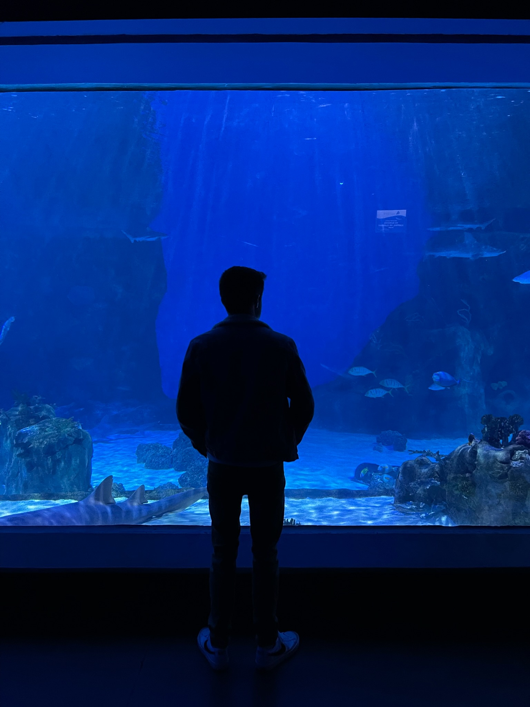
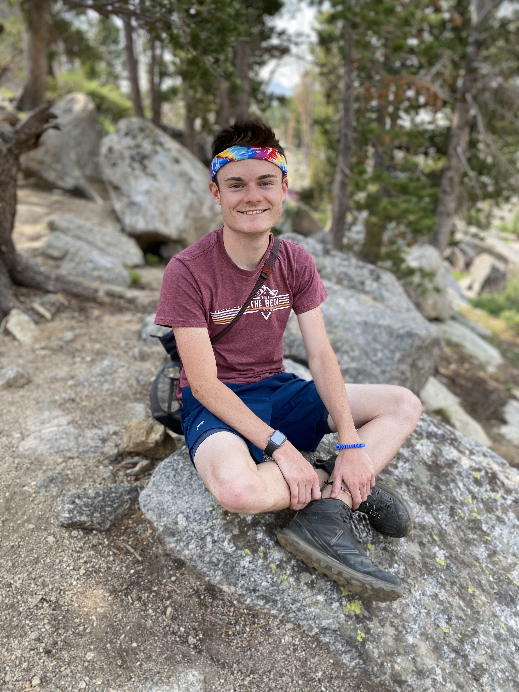

My Story
I was born and raised in Utah County!
In high school I enjoyed running cross country and track, as well as singing in the choir.
I received the academic all-state award in cross country for maintaining a 4.0 gpa throughout my highshool athletic career. Lettering in mathematics, I also graduated from Maple Mountain High School with high honors at the top of my class.
Service
From the summer of 2017 to 2019, I spent two years on a service mission for my church in Massachusetts and Conneticut. Durin my time there I shared uplifting messages about God with those I met. The majority of my time was spent providing a variety of service to the community. From food banks to soup kitchens. Whether shoveling snow, painting homes, or moving furniture, I found ways to help those around.
This special opporutnity to serve and meet people from around the world taught me how to find true joy. It also blessed me with precious life experiences.
Studies and Work
Returning home, I began studying at
Brigham Young University where I've completed 2.5 years of undergraduate study.
I will be applying for the Information Systems major during the summer time. I anticipate graduating within the next year and a half with a bachelor's degree in Infomraiton Systems.
I've worked part-time throughout my college experience to provide for my schooling. I've spent 3 years working as a server and 2 years as a supervisior a resturuant Brick Oven in Provo. My time there gave me experience in the customer service industry. I was also given leadership responsibilities as part of the managment team.
Interests
I love the beautiful outdoors! I enjoy a good adventure with friends or family.
Some of my many intrests include...
- Dogs
- Hiking
- Running
- Camping
- Biking
- Skiing
- Boating
- Traveling
- Movie Binging
- Reading a Good Book
One of my Favorite Places
Contact Me
You can contact me through my LinkedIn and Facebook accounts. Links to both profiles can be found by clicking on the icons at the bottom of the page.
“Find joy in everything you choose to do!”
—Chuck Palahniuk-